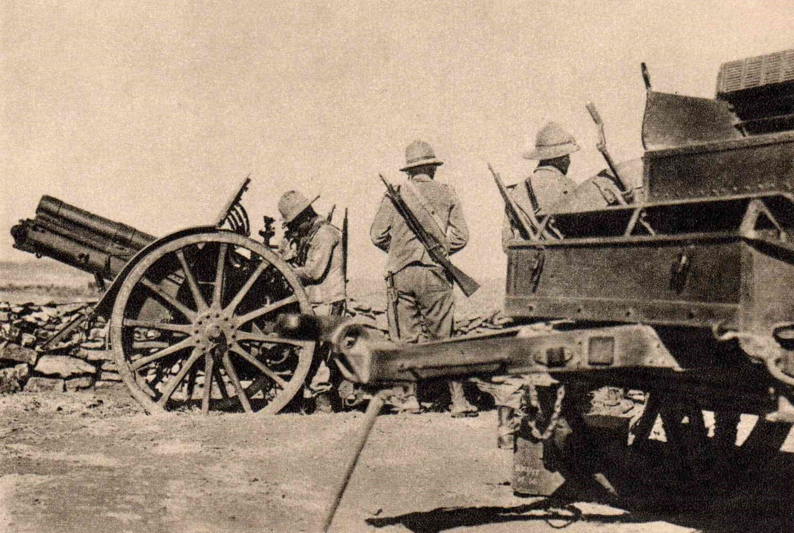

Notes: Designed for high speed towing and not as a pack gun, the M3A1 could be towed by either Horse of Motor Vehicle, after WW2 the M3A1 was designated as the M116.
Obice da 75/18 Modello 34 & 35
Year: 1934 (M34) 1940 (M35).
Weapon Type: Light Mountain Howitzer.
Amount: 118 (M34) & 186 (M35)
Crew: 5.
Calibre: 75mm (75x185).
Elevation: -10° to +65° (M34) -10° to +45° (M35).
Traverse: 50°.
Breech: Horizontal Sliding Wedge.
Recoil: .
Carriage: Split Trail (M34) Box Trail (M35).
Gun Shield: 4.2mm.
Weight in Traction: 1.832 kg (M34) 1.850 kg (M35).
Weight in Action: 780 kg (M34) 1.065 kg (M35).
Overall Length: m.
Barrel Length: 1.557mm (L/18).
Height: m.
Width: m.
Shell Weight: 6.3 kg (HE).
HE Muzzle Velocity: 425 m/s.
AP HE Muzzle Velocity: 450 m/s.
Rate of Fire: 12 r.p.m.
Armour Penetration: 48mm @ 500m @ 30°.
Maximum Range: 9.500m.
Traction (M34): Pack (Eight Loads) or Motorised (OM Autocarretta).
Traction (M35): Motorised (TL37 Tractor).
Notes: .
Obice da 100/17 Modello 16

Obice da 100/17 Modello 16
Year: 1916.
Weapon Type: Medium Mountain Howitzer.
Total: 181.
Crew: 7.
Calibre: 100mm.
Elevation: -8° to +70°.
Traverse: 5°.
Breech: Horizontal Sliding Wedge.
Recoil: Hydrospring.
Carriage: Box Trail.
Gun Shield: 4.2mm.
Weight in Traction: kg.
Weight in Action: 1.235 kg.
Barrel Length: 1.930mm (L/17).
Overall Length: 5.30m.
Height: 1.18m.
Width: 1.50m.
Shell Weight: 13.4 kg.
Muzzle Velocity: 407 m/s.
Rate of Fire: 6 r.p.m.
Maximum Range: 8.490m.
Traction: Pack (Three Loads for Two Animal Carts) Motorised (Pavesi Tractor).